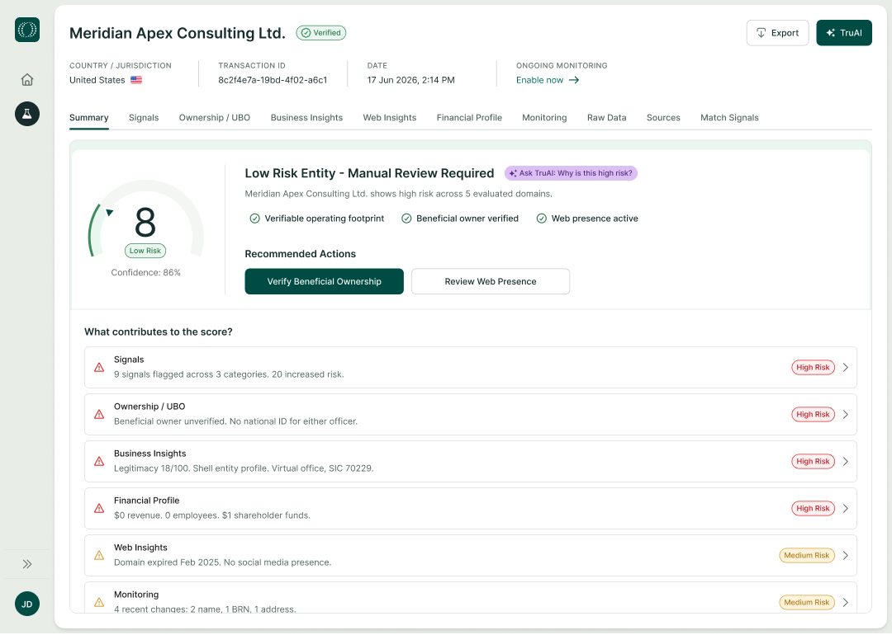
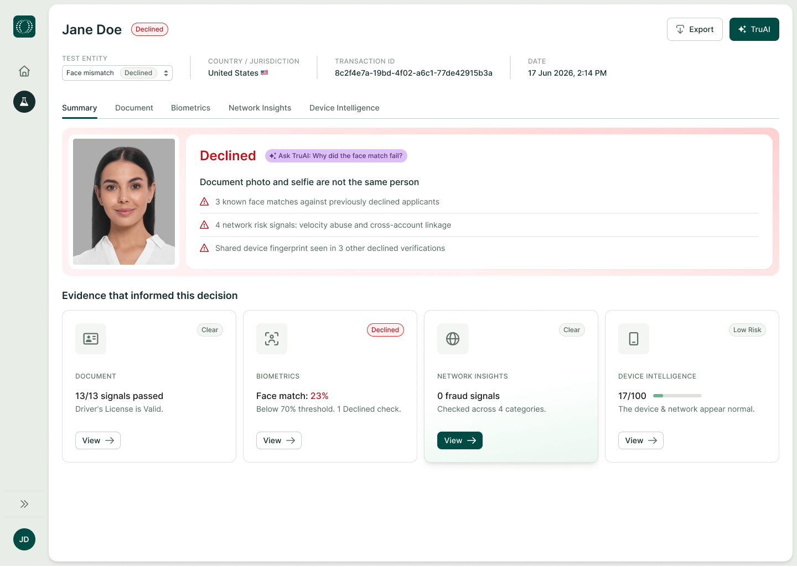
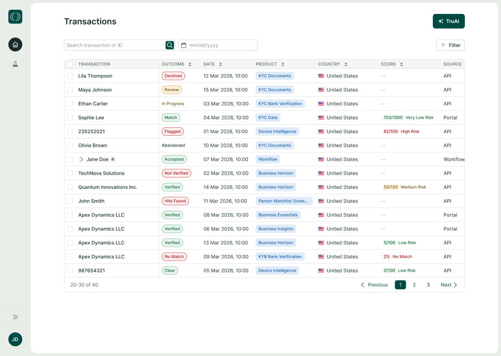

Portal home
Welcome back, Jane
Ask TruAI
Verify Business
Verify Person
Check Risk Signals
Quick start
Business verification report
Verify a company and its ownership across 195+ countries.

KYC report
Summarise identity checks for an individual customer.

View recent transactions
Review the latest verification results and outcomes.
